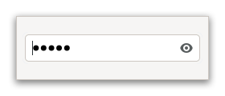

Class
GtkPasswordEntry
Description [src]
final class Gtk.PasswordEntry : Gtk.Widget {
/* No available fields */
}GtkPasswordEntry is an entry that has been tailored for entering secrets.

It does not show its contents in clear text, does not allow to copy it
to the clipboard, and it shows a warning when Caps Lock is engaged. If
the underlying platform allows it, GtkPasswordEntry will also place
the text in a non-pageable memory area, to avoid it being written out
to disk by the operating system.
Optionally, it can offer a way to reveal the contents in clear text.
GtkPasswordEntry provides only minimal API and should be used with
the GtkEditable API.
CSS Nodes
entry.password
╰── text
├── image.caps-lock-indicator
┊
GtkPasswordEntry has a single CSS node with name entry that carries
a .passwordstyle class. The text Css node below it has a child with
name image and style class .caps-lock-indicator for the Caps Lock
icon, and possibly other children.
Accessibility
GtkPasswordEntry uses the GTK_ACCESSIBLE_ROLE_TEXT_BOX role.
Instance methods
gtk_password_entry_get_show_peek_icon
Returns whether the entry is showing an icon to reveal the contents.
gtk_password_entry_set_extra_menu
Sets a menu model to add when constructing
the context menu for entry.
gtk_password_entry_set_show_peek_icon
Sets whether the entry should have a clickable icon to reveal the contents.
Methods inherited from GtkAccessible (10)
gtk_accessible_get_accessible_role
Retrieves the GtkAccessibleRole for the given GtkAccessible.
gtk_accessible_reset_property
Resets the accessible property to its default value.
gtk_accessible_reset_relation
Resets the accessible relation to its default value.
gtk_accessible_reset_state
Resets the accessible state to its default value.
gtk_accessible_update_property
Updates a list of accessible properties.
gtk_accessible_update_property_value
Updates an array of accessible properties.
gtk_accessible_update_relation
Updates a list of accessible relations.
gtk_accessible_update_relation_value
Updates an array of accessible relations.
gtk_accessible_update_state
Updates a list of accessible states. See the GtkAccessibleState
documentation for the value types of accessible states.
gtk_accessible_update_state_value
Updates an array of accessible states.
Methods inherited from GtkBuildable (1)
Methods inherited from GtkEditable (23)
gtk_editable_delete_selection
Deletes the currently selected text of the editable.
gtk_editable_delete_text
Deletes a sequence of characters.
gtk_editable_finish_delegate
Undoes the setup done by gtk_editable_init_delegate().
gtk_editable_get_alignment
Gets the alignment of the editable.
gtk_editable_get_chars
Retrieves a sequence of characters.
gtk_editable_get_delegate
Gets the GtkEditable that editable is delegating its
implementation to.
gtk_editable_get_editable
Retrieves whether editable is editable.
gtk_editable_get_enable_undo
Gets if undo/redo actions are enabled for editable.
gtk_editable_get_max_width_chars
Retrieves the desired maximum width of editable, in characters.
gtk_editable_get_position
Retrieves the current position of the cursor relative to the start of the content of the editable.
gtk_editable_get_selection_bounds
Retrieves the selection bound of the editable.
gtk_editable_get_text
Retrieves the contents of editable.
gtk_editable_get_width_chars
Gets the number of characters of space reserved for the contents of the editable.
gtk_editable_init_delegate
Sets up a delegate for GtkEditable.
gtk_editable_insert_text
Inserts length bytes of text into the contents of the
widget, at position position.
gtk_editable_select_region
Selects a region of text.
gtk_editable_set_alignment
Sets the alignment for the contents of the editable.
gtk_editable_set_editable
Determines if the user can edit the text in the editable widget.
gtk_editable_set_enable_undo
If enabled, changes to editable will be saved for undo/redo actions.
gtk_editable_set_max_width_chars
Sets the desired maximum width in characters of editable.
gtk_editable_set_position
Sets the cursor position in the editable to the given value.
gtk_editable_set_text
Sets the text in the editable to the given value.
gtk_editable_set_width_chars
Changes the size request of the editable to be about the
right size for n_chars characters.
Properties
Gtk.PasswordEntry:placeholder-text
The text that will be displayed in the GtkPasswordEntry
when it is empty and unfocused.
Properties inherited from GtkWidget (34)
Gtk.Widget:can-focus
Whether the widget or any of its descendents can accept the input focus.
Gtk.Widget:can-target
Whether the widget can receive pointer events.
Gtk.Widget:css-classes
A list of css classes applied to this widget.
Gtk.Widget:css-name
The name of this widget in the CSS tree.
Gtk.Widget:cursor
The cursor used by widget.
Gtk.Widget:focus-on-click
Whether the widget should grab focus when it is clicked with the mouse.
Gtk.Widget:focusable
Whether this widget itself will accept the input focus.
Gtk.Widget:halign
How to distribute horizontal space if widget gets extra space.
Gtk.Widget:has-default
Whether the widget is the default widget.
Gtk.Widget:has-focus
Whether the widget has the input focus.
Gtk.Widget:has-tooltip
Enables or disables the emission of the ::query-tooltip signal on widget.
Gtk.Widget:height-request
Override for height request of the widget.
Gtk.Widget:hexpand
Whether to expand horizontally.
Gtk.Widget:hexpand-set
Whether to use the hexpand property.
Gtk.Widget:layout-manager
The GtkLayoutManager instance to use to compute the preferred size
of the widget, and allocate its children.
Gtk.Widget:margin-bottom
Margin on bottom side of widget.
Gtk.Widget:margin-end
Margin on end of widget, horizontally.
Gtk.Widget:margin-start
Margin on start of widget, horizontally.
Gtk.Widget:margin-top
Margin on top side of widget.
Gtk.Widget:name
The name of the widget.
Gtk.Widget:opacity
The requested opacity of the widget.
Gtk.Widget:overflow
How content outside the widget’s content area is treated.
Gtk.Widget:parent
The parent widget of this widget.
Gtk.Widget:receives-default
Whether the widget will receive the default action when it is focused.
Gtk.Widget:root
The GtkRoot widget of the widget tree containing this widget.
Gtk.Widget:scale-factor
The scale factor of the widget.
Gtk.Widget:sensitive
Whether the widget responds to input.
Gtk.Widget:tooltip-markup
Sets the text of tooltip to be the given string, which is marked up with Pango markup.
Gtk.Widget:tooltip-text
Sets the text of tooltip to be the given string.
Gtk.Widget:valign
How to distribute vertical space if widget gets extra space.
Gtk.Widget:vexpand
Whether to expand vertically.
Gtk.Widget:vexpand-set
Whether to use the vexpand property.
Gtk.Widget:visible
Whether the widget is visible.
Gtk.Widget:width-request
Override for width request of the widget.
Properties inherited from GtkAccessible (1)
Properties inherited from GtkEditable (8)
GtkEditable:cursor-position
The current position of the insertion cursor in chars.
GtkEditable:editable
Whether the entry contents can be edited.
GtkEditable:enable-undo
If undo/redo should be enabled for the editable.
GtkEditable:max-width-chars
The desired maximum width of the entry, in characters.
GtkEditable:selection-bound
The position of the opposite end of the selection from the cursor in chars.
GtkEditable:text
The contents of the entry.
GtkEditable:width-chars
Number of characters to leave space for in the entry.
GtkEditable:xalign
The horizontal alignment, from 0 (left) to 1 (right).
Signals
Signals inherited from GtkWidget (13)
GtkWidget::destroy
Signals that all holders of a reference to the widget should release the reference that they hold.
GtkWidget::direction-changed
Emitted when the text direction of a widget changes.
GtkWidget::hide
Emitted when widget is hidden.
GtkWidget::keynav-failed
Emitted if keyboard navigation fails.
GtkWidget::map
Emitted when widget is going to be mapped.
GtkWidget::mnemonic-activate
Emitted when a widget is activated via a mnemonic.
GtkWidget::move-focus
Emitted when the focus is moved.
GtkWidget::query-tooltip
Emitted when the widgets tooltip is about to be shown.
GtkWidget::realize
Emitted when widget is associated with a GdkSurface.
GtkWidget::show
Emitted when widget is shown.
GtkWidget::state-flags-changed
Emitted when the widget state changes.
GtkWidget::unmap
Emitted when widget is going to be unmapped.
GtkWidget::unrealize
Emitted when the GdkSurface associated with widget is destroyed.
Signals inherited from GObject (1)
GObject::notify
The notify signal is emitted on an object when one of its properties has its value set through g_object_set_property(), g_object_set(), et al.
Signals inherited from GtkEditable (3)
GtkEditable::changed
Emitted at the end of a single user-visible operation on the contents.
GtkEditable::delete-text
Emitted when text is deleted from the widget by the user.
GtkEditable::insert-text
Emitted when text is inserted into the widget by the user.